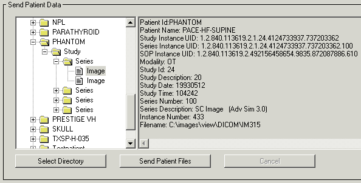
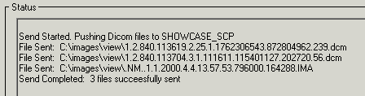

You can use the Storage SCU functionality of the DICOM Network Services utility to browse for and send DICOM files to a remote machine. To do so, complete the following steps:
| 1. | Open the DICOM Network Services utility by entering the following at the IDL command prompt if needed: |
DICOMEX_NET
| 2. | Click on the Storage SCU tab. |
Note: This tab is not available if the DICOM Network Services utility is started with the SYSTEM keyword.
| 3. | Select the Application Entity associated with the machine to which you want to send files in the Destination Node droplist. This was configured as described in Sending Files to a Remote Machine. |
| 4. | Select the files to send. You can either send files associated with the DICOM patient hierarchy (patient, study, series, image), or directly select files to send as follows: |
| • | Send data related to the DICOM patient hierarchy. In the Send Patient Data area, click the Select Directory button and select a directory containing DICOM files. Click in the Tree Navigation area and select a patient, study, or series to send all related images, or select a single image. Details about the selected item is displayed to the right of the Tree Navigation area. Click the Send Patient Files button to send the image(s) to the remote machine. Operation status is displayed in the Status area. The following figure shows an image selected in the Tree Navigation area. |
|
 |
| • | Send a selected file. In the Send File(s) area, click the Browse/Send Files button. Locate the file or files you want to send. Select multiple files by Ctrl- or Shift-clicking. Click Open to send the file(s). Operation status is reported in the Status area, an excerpt of which is shown here. |
|
 |